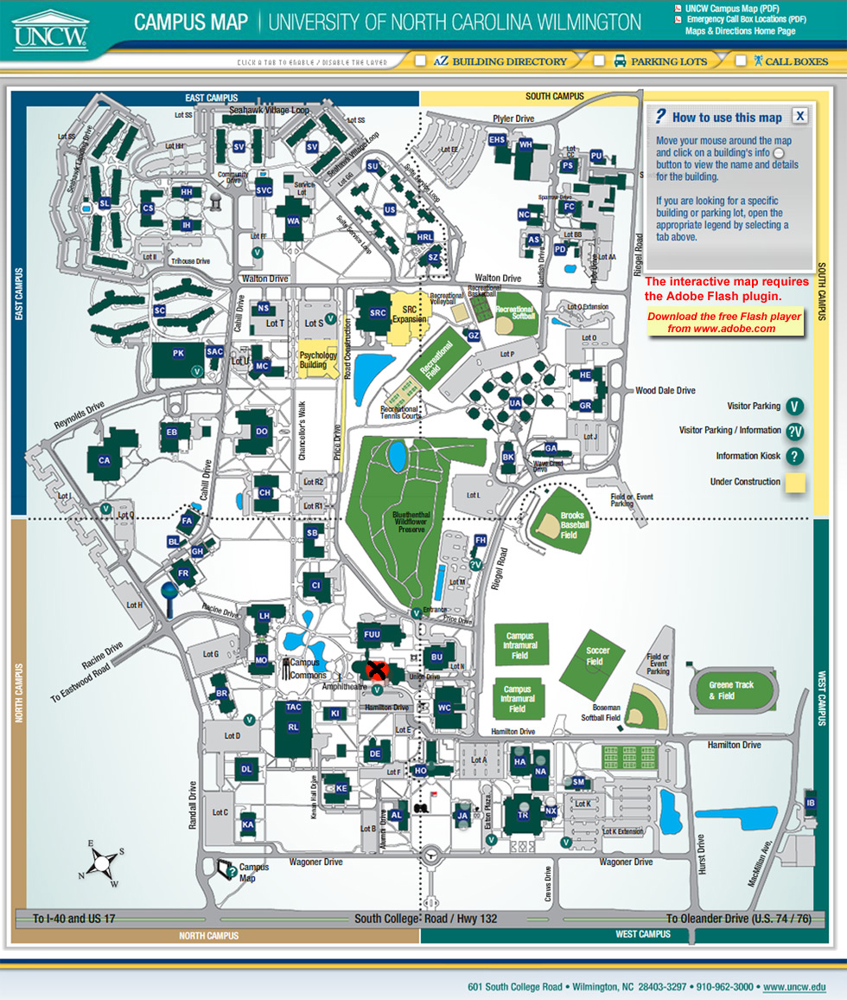
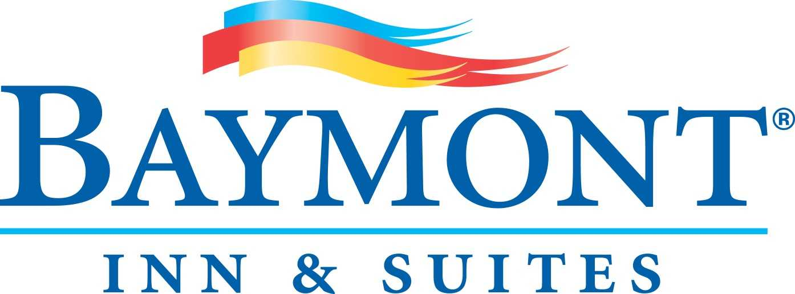

about
media
support
GETTING HERE
The Visions Film Festival and Conference takes place at the University of North Carolina Wilmington's own Lumina Theatre. You can use the directions below or generate your own directions to UNCW using the following address and a GPS, or a computer, or something crazy like that:
601 SOUTH COLLEGE ROAD
WILMINGTON, NC 28403
WILMINGTON, NC 28403
If traveling from I-40:
I-40 becomes NC 132/College Road once the interstate ends. Continue traveling south on College Road approximately 3 miles and turn left on to Hurst Drive. Continue driving until you reach the next stop light at Hamilton Drive. Turn left at the light, then make an immediate right into the gravel parking lot between the UNCW track and softball field.
If traveling to Wilmington via US 74/76:
After crossing the Cape Fear Memorial Bridge, US 76 is also called Dawson Street. Continue on Dawson Street approximately 1.5 miles. Dawson Street (US76E) will bear right and become Oleander Drive. Continue on Oleander Drive approximately 2.5 miles until it intersects with NC 132/College Road. Turn left onto College Road. Travel approximately 1 mile north, and then turn right onto Hurst Drive at the traffic light. Continue driving until you reach the next stop light at Hamilton Drive. Turn left at the light, then make an immediate right into the gravel parking lot between the UNCW track and softball field.
If traveling from the north to Wilmington via US 17:
US 17 becomes Market Street in Wilmington. Continue traveling south on Market Street. Go under the overpass at the junction of S117/S132, and immediately turn left at the traffic light onto S. College Road. Continue on College Road approximately 1 mile and turn left on to Hurst Drive. Continue driving until you reach the next stop light at Hamilton Drive. Turn left at the light, then make an immediate right into the gravel parking lot between the UNCW track and softball field.
If traveling from Wilmington International Airport:
As you exit the airport, turn left onto 23rd Street. Turn left onto Martin Luther King, Jr. Parkway. Continue to the NC 132/College Road intersection, and turn right onto College Road. Travel approximately 2 miles and turn left on to Hurst Drive. Continue driving until you reach the next stop light at Hamilton Drive. Turn left at the light, then make an immediate right into the gravel parking lot between the UNCW track and softball field.
X MARKS THE SPOT – LUMINA THEATER

{kind=link}
 |
 |
 |
 |
STAYING HERE
Featured Local Lodging

306 South College Road, Wilmington, NC
(910) 392-6767
Enjoy superb hospitality and friendly rates at Baymont Inn & Suites Wilmington hotel. Conveniently located within driving distance of the University of North Carolina Wilmington campus featuring a swimming pool, free wi fi and continently breakfast. Mention the Visions Film Festival and Conference and enjoy the special rate of $50.96 per night!
ABOUT WILMINGTON

The charming city of Wilmington NC is located in the southeastern corner of North Carolina between the Cape Fear River and the Atlantic Ocean. Although not just a tourist town, Wilmington, NC has many attractions such as the Battleship North Carolina, Airlie Gardens and Screen Gem Studios where TV shows such as Dawson's Creek and One Tree Hill were filmed. You will find many things to see, do, and enjoy during your stay in Wilmington.
Copyright 2011 VISIONS Film Festival and Conference